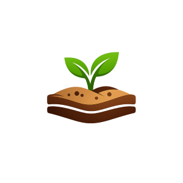

The Essentials for Growing a Successful Garden
Light
Most food plants need 6+ hours of sun. Leafy greens can manage with partial shade.
Water
Keep soil evenly moist, not soaked. Water deeply 2-3 times per week.
Soil

Use potting soil for containers. For garden beds: mix in compost to improve nutrients.
So What's Next?
Now that we know the basics of what your garden needs, let's keep growing together. Continue to the next page and learn more about which plants to grow!
Continue